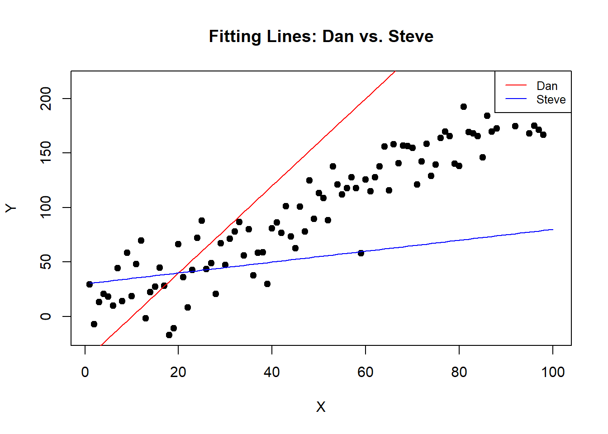
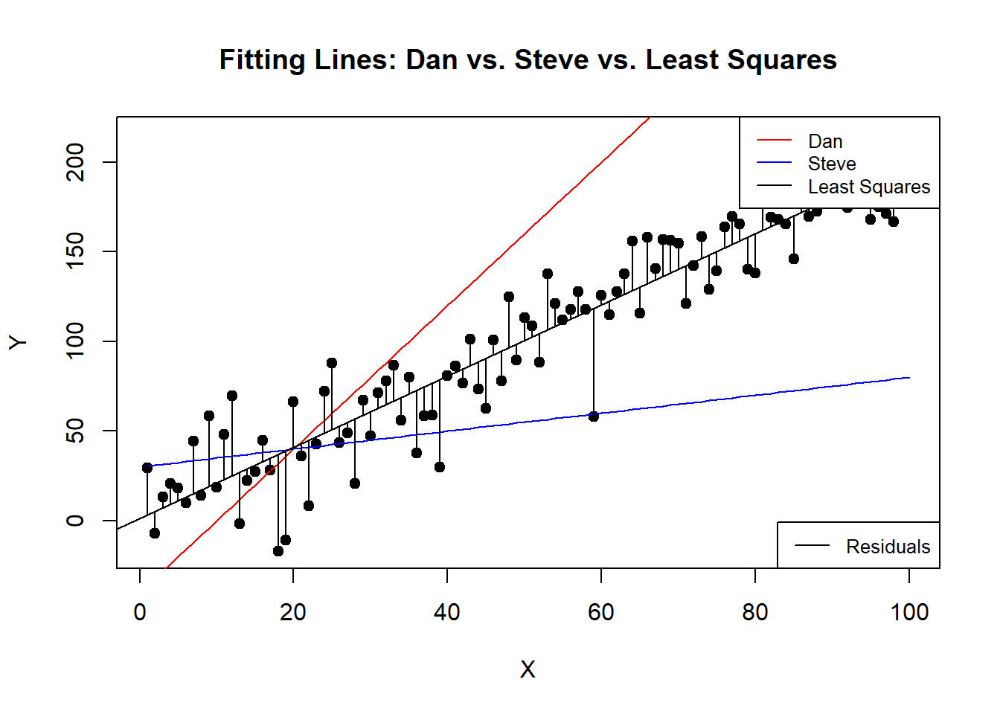

Chapter 6 Introduction to Linear Regression
Linear regression might sound complex, but let’s break it down to something as simple as fitting a line through a set of points, just like you might have done in middle school. Remember the equation \(y = mx + b\)? We’re going to start there. Remember m is the slope, and b is the intercept? Well, all regression does is solve for that using your data!
6.1 The Concept
In statistical terms, this line equation becomes \(y = \alpha + \beta \times x + \epsilon\), where:
- \(\alpha\) (alpha) is the y-intercept,
- \(\beta\) (beta) is the slope of the line,
- \(\epsilon\) (epsilon) or the error is the difference between the predicted values and the actual values.
6.1.1 Visualizing Simple Attempts
Let’s imagine a “Dan Estimator” and “Steve Estimator” are trying to draw a line through some data points. Both are pretty bad at it. Their lines don’t really capture the trend of the data.
# Simulate some data
set.seed(42)
x <- 1:100
y <- 2*x + rnorm(100, mean=0, sd=20) # true line: y = 2x + noise
plot(x, y, main = "Fitting Lines: Dan vs. Steve", xlab = "X", ylab = "Y", pch = 19)
# Dan's and Steve's poor attempts
lines(x, 4*x - 40, col = "red") # Dan's line
lines(x, .5*x + 30, col = "blue") # Steve's line
legend("topright", legend=c("Dan", "Steve"), col=c("red", "blue"), lty=1, cex=0.8)
6.1.2 Finding the Best Fit
Now, while Dan and Steve’s attempts are entertaining, they’re obviously not ideal. Maybe we want an estimator that draws a line right through the middle of these points? One that minimizes the distance from all points to the line itself. How can we ensure it’s the best fit?
6.1.2.1 Introducing Least Squares
We want to fit a line through the middle one where we minimize the distance from the line to the points on average. In otherwords we aim to minimize the sum of the squared distances (squared errors) from the data points to the regression line. This method is called “least squares.”
set.seed(42)
x <- 1:100
y <- 2*x + rnorm(100, mean=0, sd=20)
# Fitting a regression line
fit <- lm(y ~ x)
# true line: y = 2x + noise
plot(x, y, main = "Fitting Lines: Dan vs. Steve vs. Least Squares", xlab = "X", ylab = "Y", pch = 19)
# Dan's and Steve's poor attempts
lines(x, 4*x - 40, col = "red") # Dan's line
lines(x, 0.5*x + 30, col = "blue") # Steve's line
abline(fit, col="black") # adding the least squares line
# Adding residuals for the least squares line
predicted_values <- predict(fit)
for (i in 1:length(x)) {
lines(c(x[i], x[i]), c(y[i], predicted_values[i]), col="black")
}
legend("topright", legend=c("Dan", "Steve", "Least Squares"), col=c("red", "blue", "black"), lty=1, cex=0.8)
# Add a legend for the residuals
legend("bottomright", legend=c("Residuals"), col=c("black"), lty=1, cex=0.8)
Here we can see that the Least Squares line goes right through the middle and on average the distance from the line, the “residuals” are about the same on top as they are on the bottom.
6.1.3 Understanding the Model
The regression equation can be written as: \[ y = \alpha + \beta \times x + error\] where \(\hat{\alpha}\) and \(\hat{\beta}\) are estimates of the intercept and slope, determined by the least squares method.
6.1.4 Going a Step Further: Linear Algebra
For those interested in the mathematical details, the coefficients \(\beta\) can also be estimated using linear algebra. This is expressed as: \[ \beta = (X^TX)^{-1}X^TY \] where \(X\) is the matrix of input values, and \(Y\) is the vector of output values. This formula provides the least squares estimates of the coefficients.
Let’s take the cars dataset, which contains two variables: speed (the speed of cars) and dist (the distance required to stop). We’ll predict dist based on speed using linear algebra.
6.1.4.1 Load and Prepare Data
First, let’s load the data and prepare the matrices.
# Load the dataset
data(mtcars)
# Prepare the data matrix X (with intercept) and response vector Y
X <- as.matrix(cbind(Intercept = 1, `Weight (1000 lbs)` = mtcars$wt, `Displacement (cu.in.)` = mtcars$disp, `Horsepower` = mtcars$hp, `Number of cylinders` = mtcars$cyl)) # Adding an intercept
Y <- mtcars$mpg
# Display the first few rows of X and Y
head(X)## Intercept Weight (1000 lbs) Displacement (cu.in.) Horsepower Number of cylinders
## [1,] 1 2.620 160 110 6
## [2,] 1 2.875 160 110 6
## [3,] 1 2.320 108 93 4
## [4,] 1 3.215 258 110 6
## [5,] 1 3.440 360 175 8
## [6,] 1 3.460 225 105 6## [1] 21.0 21.0 22.8 21.4 18.7 18.16.1.4.2 Apply the Linear Algebra Formula for Beta
Now, we apply the linear algebra formula to compute the coefficients. The formula \(\beta = (X^TX)^{-1}X^TY\) will give us the estimates for the intercept and the coefficient for speed.
# Compute (X'X)^(-1)
XTX_inv <- solve(t(X) %*% X)
# Compute beta = (X'X)^(-1)X'Y
beta <- XTX_inv %*% t(X) %*% Y
# Print the estimated coefficients
beta## [,1]
## Intercept 40.82853674
## Weight (1000 lbs) -3.85390352
## Displacement (cu.in.) 0.01159924
## Horsepower -0.02053838
## Number of cylinders -1.29331972This isn’t as pretty but check that out! Let’s just compare it to the built in lm function:
##
## Call:
## lm(formula = mpg ~ wt + disp + hp + cyl, data = mtcars)
##
## Residuals:
## Min 1Q Median 3Q Max
## -4.0562 -1.4636 -0.4281 1.2854 5.8269
##
## Coefficients:
## Estimate Std. Error t value Pr(>|t|)
## (Intercept) 40.82854 2.75747 14.807 1.76e-14 ***
## wt -3.85390 1.01547 -3.795 0.000759 ***
## disp 0.01160 0.01173 0.989 0.331386
## hp -0.02054 0.01215 -1.691 0.102379
## cyl -1.29332 0.65588 -1.972 0.058947 .
## ---
## Signif. codes: 0 '***' 0.001 '**' 0.01 '*' 0.05 '.' 0.1 ' ' 1
##
## Residual standard error: 2.513 on 27 degrees of freedom
## Multiple R-squared: 0.8486, Adjusted R-squared: 0.8262
## F-statistic: 37.84 on 4 and 27 DF, p-value: 1.061e-10Math works! In all seriousness though computers are much faster at solving \(\beta = (X^TX)^{-1}X^TY\) than running that function, so if you are computing many \(\beta\)s at once, it can come in handy.
6.2 Assumptions of Linear Regression
To effectively use linear regression, it’s essential to understand its underlying assumptions. If these assumptions are violated, the results might not be reliable. Here are the key assumptions:
- Linearity: The relationship between the predictors and the dependent variable is linear.
- Independence: Observations are independent of each other.
- Homoscedasticity: The variance of residual is the same for any value of the input variables.
- Normality: For any fixed value of the predictors, the dependent variable is normally distributed.
Addressing these assumptions ensures the validity of the regression results. When these assumptions are not met, modifications and more advanced techniques might be necessary.
6.3 Extending Linear Regression
As powerful as linear regression is, it sometimes needs to be adjusted or extended to handle more complex data characteristics. Here are a few notable extensions:
6.3.1 Spatial Regression
When dealing with geographical or spatial data, traditional regression might not suffice because observations in close proximity might be correlated, violating the independence assumption. Spatial regression models account for this correlation, offering more precise insights for geographical data analysis.
6.3.2 Robust Estimation
Robust estimators are a broad class of estimators that generalize the method of least squares. They are particularly useful when dealing with outliers or heavy-tailed distributions, as they provide robustness against violations of the normality assumption.
6.3.3 Robust Standard Errors
Robust standard errors are an adjustment to standard errors in regression analysis that provide a safeguard against violations of both the homoscedasticity and independence assumptions. They are essential for drawing reliable inference when these assumptions are challenged.